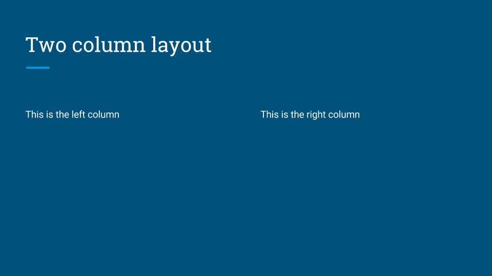
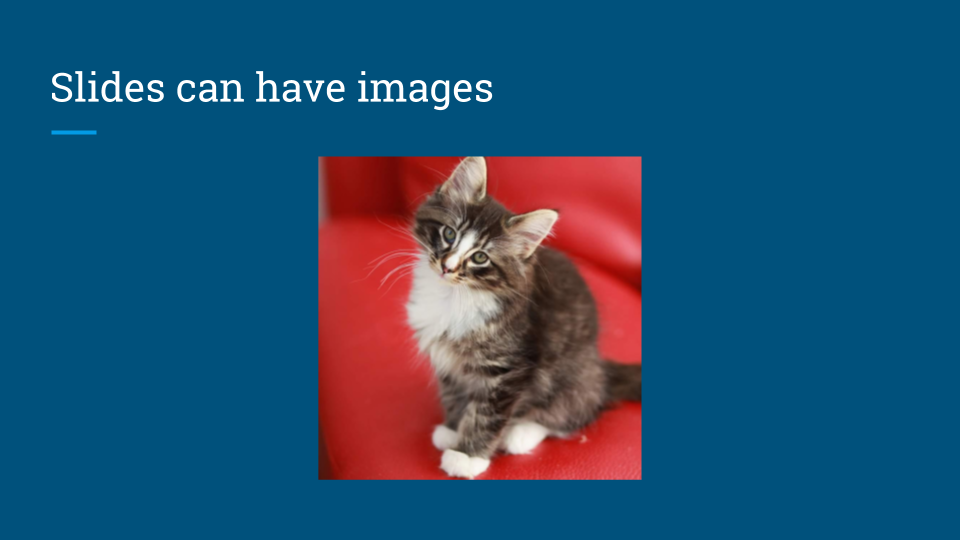

If you’ve seen some of my earliest posts about Markdown you know that I love the flexibility of writing Markdown and then generate other formats. Using my starter kit I can generate HTML and PDF from the same Markdown source.
I found out a project to convert Markdown to Google Slides using a modified Markdwon parser and the Slides API to generate complete presentations.
In this essay I’ll look at tree aspects of this process:
We could use code from Literate CSS to build both the narrative and the presentation for a given content. In the future we may want to use our own custom parser so we write less raw HTML in the Markdown files.
I’ll use the same tools from the starter project to add the slide functionality. We don’t need to add any plugins for the code to work.
The task is simple. It takes all the Markdown files from the src/slides directory and run the md2gslides utility to convert them to Google Slides.
// Build Google Slides
gulp.task('build-slides', () => {
let options = {
// default = false, true means don't emit error event
continueOnError: false,
// default = false, true means stdout is written to file.contents
pipeStdout: false,
};
let reportOptions = {
// default = true, false means don't write err
err: true,
// default = true, false means don't write stderr
stderr: true,
// default = true, false means don't write stdout
stdout: true
};
return gulp.src('./src/slides/*.md')
.pipe($.exec('md2gslides --style github <%= file.path %> ', options))
.pipe($.exec.reporter(reportOptions))
});
Each slide is typically represented by a header, followed by zero or more block elements. The tool uses a modified markdown parser to generate the content.
Begin a new slide with a horizontal rule (---). The separator is optional on the first slide.
The following examples show how to create slides of various layouts:
---
# This is a title slide
## Your name here
---
# This is a section title
---
# Section title & body slide
## This is a subtitle
This is the body
---
# Title & body slide
This is the slide body.
Add {.big} to the title to make a slide with one big point
---
# This is the main point {.big}
Use {.big} on a header in combination with a body too.
---
# 100% {.big}
This is the body
Separate columns with {.column}. The marker must appear
on its own line with a blank both before and after.
---
# Two column layout
This is the left column
{.column}
This is the right column

Images can be placed on slides using image tags. Multiple images can be included. Mulitple images in a single paragraph are arranged in columns, mutiple paragraphs arranged as rows.
Note: Images are currently scaled and centered to fit the slide template.
---
# Slides can have images


Set the background image of a slide by adding {.background} to
the end of an image URL.
---
# Slides can have background images
{.background}
Include YouTube videos with a modified image tag.
---
# Slides can have videos
@[youtube](MG8KADiRbOU)
Include speaker notes for a slide using HTML comments. Text inside the comments may include markdown for formatting, though only text formatting is allowed. Videos, images, and tables are ignored inside speaker notes.
---
# Slide title
{.background}
<!--
These are speaker notes.
-->
Basic formatting rules are allowed, including:
The following markdown illustrates a few common styles.
**Bold**, *italics*, and ~~strikethrough~~ may be used. Ordered lists: 1. Item 1 1. Item 2 1. Item 2.1 Unordered lists: * Item 1 * Item 2 * Item 2.1
Additionally, a subset of inline HTML tags are supported for styling.
<span><sup><sub><em><i><strong><b>Supported CSS styles for use with <span> elements:
colorbackground-colorfont-weight: boldfont-style: italictext-decoration: underlinetext-decoration: line-throughfont-familyfont-variant: small-capsUse Github style emoji in your text using
the :emoji:.
The following example inserts emoji in the header and body of the slide.
### I :heart: cats :heart_eyes_cat:
Both indented and fenced code blocks are supported, with syntax highlighting.
The following example renders highlighted code.
### Hello World
```javascript
console.log('Hello world');
```
To change the syntax highlight theme specify the --style <theme> option on the
command line. All highlight.js themes
are supported. For example, to use the github theme
$ md2gslides slides.md --style github
Tables are supported via GFM syntax.
Note: Including tables and other block elements on the same slide may produce poor results with overlapping elements. Either avoid or manually adjust the layout after generating the slides.
The following generates a 2x5 table on the slide.
### Top pets in the United States Animal | Number -------|-------- Fish | 142 million Cats | 88 million Dogs | 75 million Birds | 16 million
Is this the only way to automate creation of Google Slides? No, it isn’t. Google provides an API that allows developers to programmatically create presentations, slides and slide content. The G Suite Dev Show provides tutorials in addition the tutorials and examples in the API website.